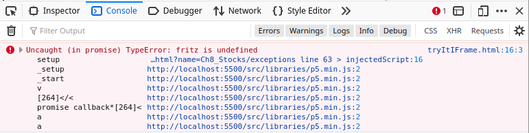

Stocks
The book is coming to an end, which usually means it's getting interesting. We will cover such topics as files, exception handling and we will get to know our first data structures. We continue with object-oriented analysis, learn a little more about interfaces and hear about polymorphism.
.
Files
As soon as we turn off the computer, all data is gone - unless it has been saved. Saved means that we wrote it to a file. This is easier than you might think, but we start with reading from a file.
To read from a file we have to do three things:
- open the file,
- read from the file, line by line, and
- close the file.
In code it looks like this:
// open file let fr = new Utils.FileReader(fileName); // read from file, line by line while (true) { let line = fr.readLine(); if (line == null) break; println(line); } // close file fr.close();
We use our Utils.FileReader class to read text files. We simply pass the file name of the file to be opened.
Then we simply use a Loop-And-A-Half to read line by line from the file using the readLine() method. We know that we have reached the end of the file when readLine() returns null. Then there is nothing more to read, which means we close the file reader with the close() method.
A brief note on our Utils.FileReader class is in order: a browser can not directly access your file system. What the browser can do, is upload files, we see that later in the project UploadFile. What our class Utils.FileReader does is to load a file from the web server where we host our JavaScript files. Also, interesting, most of the programs we wrote up to now, do work locally from the file system without hosting. The Utils.FileReader does not, because it violate the CORS policy of your browser [8]. And a final remark, why did we not call it simply FileReader? There already exists a class in JavaScript that is called FileReader, which does not really do what you would expect of it, coming from Java. And it is a nice opportunity to show, how to handle naming conflicts in JavaScript.
.
Write to File
When writing to a file we have to do three things:
- open the file for writing,
- then write to the file, and
- close the file.
The code looks very similar to the one above:
// open file let fw = new Utils.FileWriter("test.txt"); // write to file, one string at a time println("Enter text to write ('.' to quit): "); while (true) { let line = await readLine(""); if (line == '.') break; fw.append(line + "\n"); } // close file fw.close();
 We use the FileWriter class to write to text files. First we pass the file name to which we want to write. Then we use the Loop-And-A-Half again to write line by line using the method write(). The '\n' may also be interesting: it is the character for new line, and ensures that the next string in the "test.txt" file is written to a new line. To avoid getting stuck in an infinite loop, we check if the user has entered a period, this is our abort criterion. Then we close our writer with the close() method.
We use the FileWriter class to write to text files. First we pass the file name to which we want to write. Then we use the Loop-And-A-Half again to write line by line using the method write(). The '\n' may also be interesting: it is the character for new line, and ensures that the next string in the "test.txt" file is written to a new line. To avoid getting stuck in an infinite loop, we check if the user has entered a period, this is our abort criterion. Then we close our writer with the close() method.
Like not being allowed to read files, the browser also is not allowed to write files. But what the browser can do is download files. So this is what we do here, we actually download the files, and the user can then choose whether and where to store the files.
.
Data Structures
Data structures are extremely important. Unfortunately, most people stop with the array data structure, which we have seen already. More important, however, is the Map data structure. JavaScript has the Array class and the Map class for these. The equivalent classes in Java are called ArrayList and HashMap. Let us briefly compare the two:
|
|
As you can see they are basically equivalent from a user point of view. I wrote little wrapper classes in the utils library, so you can choose either the Java syntax or the JavaScript syntax. The simple reason for this is, that I had all the examples written in Java, and did not want to do a complete rewrite. I was surprised that this worked so well, that I did want to show you this, because it is a very nice example of software portability [9].
.
 Try it
Try itArrayList
Let's start by declaring and instantiating an ArrayList:
let names = new ArrayList();
Here we create an ArrayList with the name "names". An ArrayList can grow and shrink, depending on requirements. That's very practical!
Next, we want to add a few names to our list of names, but only if the name is not already in the list:
while (true) {
let name = await readLine("Enter new name: ");
if (name.length == '')
break;
if (!names.contains(name)) {
names.add(name);
}
}
With the method contains() we check, if a certain name is already in the list. If not, we add it with add(). Also, we don't have to specify an index when adding, new entries are simply inserted at the end of the list.
If we want to print our list of names, we have to iterate over the list:
for (let i = 0; i < names.size(); i++) { println(names.get(i)); }
With the size() method we can determine how many entries our list has, and with get() we read the entry at a certain position. Additionally, the ArrayList has the following practical methods:
- set(): replaces the entry at a certain position with a new one,
- indexOf(): searches for an entry and returns the position,
- remove(): removes an entry from the list, and
- clear(): deletes the complete list.
But as I stated before, you can also use the equivalent JavaScript Array methods.
.
HashMap
HashMaps are probably the most useful of all data structures: because we can use them for searching. Classic examples of hash maps are telephone books and dictionaries. Let's take a closer look at the former, the PhoneBook. We'll start with the HashMap declaration:
let phoneBook = new HashMap();
A HashMap associates a value with a key, which is why it is sometimes also called an associative array.
Let's add some values to our PhoneBook:
while (true) {
name = await readLine("Enter name: ");
if (name == '')
break;
let number = await readInt("Enter number: ");
phoneBook.put(name, number);
}
Inserting is done with the method put(): it takes two arguments, a name and a number. If the name already exists in the map, it is overwritten, if not, it is inserted. In a HashMap there can never be two entries with the same name, keys must be unique.
After we have filled our PhoneBook with some data, we want to search in it, because that's what the HashMap is good for:
name = await readLine("Enter name to search: ");
if (name == '')
break;
if (phoneBook.containsKey(name)) {
println(phoneBook.get(name));
} else {
println("no entry for this name");
}
With the containsKey() method we can test if a name exists in the map, and with get() we can get the number to the name. This looks very similar to the ArrayList, but it is much cooler: with the ArrayList we have to know the index of the entry we want to access, with the HashMap we simply say: give me the phone number for that name.
Just in case we want to list all phone numbers in our PhoneBook, let us iterate through our map:
for (const name of phoneBook.keySet()) { let number = phoneBook.get(name); println(name + ": " + number); }
This looks different: the first line seems to make no sense at all. The problem with maps is that they do not have an index, i.e. we can not say give me the second element, because a map does not know what its second element is (or at least it doesn't tell us). There is also not really any fixed ordering, i.e. the order in which the entries are output may be completely different from the order in which they were inserted.
This is why the iteration uses this pseudo-for-loop trick:
for (const name of phoneBook.keySet()) { ... }
It basically says: give me a name from the list of names in the map. And after that one, you give me the next one, etc. until we're all through. Once you've accepted that is how a map works, the rest is easy.
.
Object-Orientierted Analysis
We are at a transition: we are just leaving the procedural one-class world and entering the object-oriented multi-class world. This transition is not entirely painless. And where the top-down approach has served us really well so far, it now only helps us on a small scale, but no longer on a larger scale.
However, this is where object-oriented analysis comes to the rescue. Before we start to write any code, we first need to think about what we want. This is called requirements analysis. It is best to write the requirements down in very simple sentences. For example, the requirements for a web shop could be formulated in the following way:
"The Azamon Shop has articles and shopping carts. An article has a name, type and price. A shopping cart has a user name and a list of articles. We can list all the articles of the shop. We can list all the articles in a shopping cart. We can put an article in a shopping cart. We can calculate the price of all articles in a shopping cart."
These requirements are the basis for our object-oriented analysis.
1.Step: In the first step of this analysis we take a colored pencil and underline the verbs green and the nouns with red:
"The Azamon Shop has articles and shopping carts. An article has a name, type and price. A shopping cart has a user name and a list of articles. We can list all the articles of the shop. We can list all the articles in a shopping cart. We can put an article in a shopping cart. We can calculate the price of all articles in a shopping cart."
2.Step: In the second step we make a list for all the verbs:
- has
- list
- list
- put
- calculate
and the nouns are listed and counted:
- shop: II
- article: IIIIIII
- shopping cart: IIIII
- name: I
- type: I
- price: II
- user name: I
Counting is not absolutely necessary, but helps to recognize what may be more important.
3.Step: In the third step we look at the list of nouns. Which of the nouns can we describe with a simple data type like int, double, string etc.?
- shop: ???
- article: ???
- shopping cart: ???
- name: String
- type: String
- price: int
- user name: String
If something is complicated, i.e. consists of other parts, such as shop, article and shopping cart, then it is a complicated data type, i.e. a class. So we have identified our classes: Shop, Article and ShoppingCart.
4.Step: The fourth step is to assign the right attributes to the right classes. To do this, we simply re-read our requirements. They say:
- "The Azamon Shop has articles and shopping carts": so obviously articles and shopping carts belong to the shop, are therefore attributes of the Shop.
- "An article has a name, a type and a price": so name, type and price are part of the Article.
- "A shopping cart has a user name and a list of articles": so user name and list of articles belong to the ShoppingCart.
At this point it also makes sense to pay attention to the plural: every time a word appears in the plural, this means that we need a list (or map) of the respective attributes. For example, "list of articles" or "shopping carts" then become ArrayLists.
 With this information we can already write down our classes with attributes:
With this information we can already write down our classes with attributes:
class Shop {
constructor() {
this.carts;
this.articles;
}
}
class Article {
constructor() {
this.name;
this.type;
this.price;
}
}
class AzamonCart {
constructor() {
this.userName;
this.articles;
}
}
5.Step: The last step is to assign the methods to the correct classes. All the verbs we collected in the second step, turn into methods (we have always said that methods are verbs). We go through our list of verbs one at a time:
- has: "has" does not count as a verb, since it expresses affiliation and was already used in step 4.
- list: refers to "We can list all items in the shop", so it is part of the Shop and should be called listArticles().
- list: refers to "We can list all items in a shopping cart", so it is part of the ShoppingCart and should also be called listArticles().
- put: refers to "We can put an item in a shopping cart", therefore it belongs to the ShoppingCart and should be called putArticle() or addArticle().
- calculate: refers to "We can calculate the price of all items in a shopping cart", so it belongs to the ShoppingCart, and should be called calculatePrice().
After this analysis, our classes, their attributes and methods are basically fixed:
class Shop {
constructor() {
super();
this.carts;
this.articles;
}
listArticles() {
}
}
class Article {
constructor() {
super();
this.name;
this.type;
this.price;
}
}
class Cart {
constructor() {
super();
this.userName;
this.articles;
}
listArticles() {
}
addArticleToCart() {
}
calculatePriceOfArticlesInCart() {
}
}
What we have not decided yet are the parameters the methods accept and what they return. And it never hurts to give each class a constructor. And of course a minor thing: the code is still missing.
.
Errors
What if something goes wrong? Or first of all, what can go wrong? For example, look at the following two lines of code:
let fritz; fritz.setColor(Color.RED);
If you run this in the browser, nothing happens. However, if you look at the browser's console (usually with F12) you will see the following error message:

The error message says that fritz is undefined. The error is a TypeError. It even tells you where the problem is: at line 16 column 3 of your JavaScript file (16:3). Usually it provides a link which you can click on and it navigates you automatically to the problematic line in the code.
Can anything else go wrong? Yes, many things can go wrong. Here are a couple of typical cases:
// TypeError
let num = 1;
num.toUpperCase();
// RangeError
let b = new Array(-1)
// ReferenceError
let x = 3;
x = x + y;
// SyntaxError
eval("let s = 'hi");
You want the upper case version of a number, or an array with a negative size, or you are using a variable that has not been initialized, and then there can be errors in you JavaScript code itself.
What happens to our program when an error occurs? Well, other programming languages just crash., but JavaScript is very cool about this: it tries to ignore the errors, and continues as if nothing had happened, kind of like my mother in law. But naturally, the results that come out will most likely be wrong or nonsense. Hence, what we should do is appropriate error handling with try-catch.
.
Try-Catch
With a try-catch statement we first try if everything works. If it works, fine, if not, then we tell the program what to do. In code it looks like this:
try {
// problematic code
...
} catch ( e ) {
// deal with error
...
}
...
We surround our problematic code with a try block. If everything works, the program continues normally (the catch block is not executed). If something goes wrong, however, the program does not terminate, but jumps to the catch block instead and executes it. After that, the program assumes that we have everything under control and executes the code after the catch block as if nothing had happened.
Interesting maybe that what would be errors in other languages, are no problem for JavaScript:
// ArithmeticException
let x = 5 / 0;
console.log(x); // Infinity
// NumberFormatException
let y = parseInt("five");
console.log(y); // NaN
// ArrayIndexOutOfBoundsException
let eggs = [0, 1, 2, 3];
console.log(eggs[5]); // undefined
throw
If you want to, you can also throw your own errors. For instance,
if (!locateKarel()) {
throw Error("Could not locate Karel in the world");
}
would throw an error, which then should be caught with some try-catch.
"use strict"
While we are at errors: recall that in JavaScript we are not required to declare variables. This can lead to problems:
//"use strict"; // uncomment this line
function run(() {
let fritz = 5;
frits = 4;
console.log(fritz);
}
In the third line, we want to reassign a new value to the variable fritz. But we made a typo, and hence instead of a reassignment, we declared a new variable named frits. JavaScript does not care, there is no error here. To avoid these kinds of stupid mistakes, it is highly recommended that you start all of your JavaScript code with the "use strict" keyword. Adding it, will result in an error being thrown.
SEP: Always add the line "use strict" at the top of your code!
.
Interfaces
Finally we come to the last topic of this chapter: interfaces. We could make this very short by saying that JavaScript does not have interfaces or abstract classes. Period.
But obviously, if so many languages have it, there must be a good reason for it. Until now we have always programmed alone. But what if we work in teams, meaning several people write on the same program? How do we know who writes what? How can we be sure the different pieces fit together? We use interfaces for exactly this purpose.
Let's take NumberGuess as an example. The objective of the game is for the computer to choose a random number, let's say between 0 and 99, and for the player to guess that number in as few steps as possible. The program consists of two parts: the part that takes care of the logic (NumberGuessLogic) and the part that interacts with the player (NumberGuessConsole). This means we have two classes, who depend on each other. We want to clearly define this dependency, and we do this by means of an interface. Since JavaScript does not have interfaces or abstract classes, we just use a normal class:
// interface or abstract class
class NumberGuessLogic {
constructor() {
// if we need 'this' in constructor of subclass, then super() must be called,
// hence we can not throw an Error here:
// throw new Error('NumberGuessLogic is interface, can not be instantiated!');
}
/**
* guess should be number between 0 and 99 <br/>
* return 0 if guess was correct <br/>
* return +1 if guess was higher <br/>
* return -1 if guess was lower
*
* @param guess
* @return
*/
makeGuess(guess) {
throw new Error('Method is abstract, needs to be implemented!');
}
}
This interface is a contract between two developers:
- For one developer (NumberGuessConsole) it means that there will be a method makeGuess(int guess), which takes the number guessed as a parameter, and which returns whether the number was to small, to large or correct (-1, +1, 0).
- For the other developer (NumberGuessLogic) it means that she has to write a method makeGuess(int guess), which compares a guess with the internally generated random number and returns whether the number was to small, to large or correct (-1, +1, 0).
This allows two or more developers to independently write separate pieces for a common program that can then easily be merged. Notice two things about the code: it has lots of comments, because two people have to agree explicitely what the method is supposed to do, there should be no ambiguity. And it throws an error, indicating, that this class is not really supposed to be used.
Let's continue with how this would be used: We start with the part that implements the NumberGuessLogic interface. It is customary to add the extension "Impl" to classes that implement a given interface, hence the name NumberGuessLogicImpl:
// implementation of interface
class NumberGuessLogicImpl extends NumberGuessLogic {
constructor() {
super();
const rgen = new RandomGenerator();
this.number = rgen.nextInt(0, 99);
}
/**
* guess should be number between 0 and 99 return 0 if guess was correct
* return +1 if guess was higher return -1 if guess was lower
*
* @param guess
* @return
*/
makeGuess(guess) {
if (guess == this.number) {
return 0;
}
if (guess > this.number) {
return +1;
} else {
return -1;
}
}
}
This class must have a method called makeGuess(int guess), which of course must do something now. Naturally, the random number must be generated somewhere, probably in the constructor.
Regardless of this, the other developer can already start with NumberGuessConsole class. This is a normal console program:
async function setup() {
createConsole();
// let logic = new NumberGuessLogic();
let logic = new NumberGuessLogicImpl();
if (logic instanceof NumberGuessLogic) {
while (true) {
let guess = await readInt("Enter guess: ");
if (logic.makeGuess(guess) == 0)
break;
if (logic.makeGuess(guess) == 1) {
println("Number is smaller.");
} else {
println("Number is higher.");
}
}
println("You won!");
} else {
println("'logic' is not of type NumberGuessLogic!");
}
}
Notice first that with the instanceof operator we make sure that the Impl class is of the correct type. And second the commented line, that is the line the second developer used before the Impl class was finished, to write her code. When both developers are done, we just put the classes together into one project, and everything should work fine.
We could have used the same approach also in the TicTacToe and the MindReader projects, if we wanted to.
.
Polymorphism
Steve Jobs used to end his presentation with the sentence "one more thing..." and usually that's when it got interesting. Polymorphism literally means "many forms". And what does this have to do with JavaScript?
Let's remember our Student example from the MindReader chapter. We defined a class Student:
class Student {
constructor(name, id = -1) {
this.name = name;
...
}
toString() {
return "Student [name=" + this.name + ", id=" + this.getId()
+ ", credits=" + this.incrementCredits() + "]";
}
}
In addition, we could also define a class Freshman, which extends a Student:
class Freshman extends Student {
constructor(name, id = -1) {
super(name, id);
}
toString() {
return "Freshman [name=" + this.name + ", id=" + this.getId()
+ ", credits=" + this.incrementCredits() + "]";
}
}
This means, Freshman can do everything Student can, the only difference is when calling the toString() method.
Since both classes are of type Student, we can assume that they have a toString() method, and thus the following function makes totally sense,
function polymorphic(studnt) {
println(studnt.toString());
}
if it is called with with a Student or a Freshman object:
async function setup() {
createConsole();
const hansel = new Freshman("Hänschen");
polymorphic(hansel);
const gretel = new Student("Gretchen");
polymorphic(gretel);
}
Now in JavaScript there is a little problem: there is no compiler preventing us from doing stupid things. For instance we could call the polymorphic() function with a string:
polymorphic("hi there");
That would work, but it is not really what we wanted. But if we change the polymorphic() function slightly,
function polymorphic(studnt) {
if (studnt instanceof Student) {
println(studnt.toString());
} else {
throw Error("Parameter is not of type Student!");
}
}
we get exactly what we wanted: a method that works for both Students and Freshmen, meaning it is polymorph. Well, as polymorph as it is going to get in JavaScript.
We now know all three pillars of object-oriented programming:
- Data Encapsulation and Information Hiding,
- Inheritance and Composition,
- and Polymorphism.

.
Review
It was about time we learned how to work with files. Also the exception handling should have come much earlier, but of course it makes much more sense to introduce it together with files. What is really new and will prove very useful for the future are the data structures ArrayList and HashMap. They will make our lives easier many times over. And we have checked off the topics of interfaces and polymorphism, nothing really to be afraid of.
But the most important thing in this chapter was the object-oriented analysis, so to speak Top-Down 2.0.
.
Projects
Was all the trouble worthwhile? Well, see for yourself.
.
WriteToStorage
Most browsers have something that is called local storage. It kind of acts like a file system, and one way we can use it is as a kind of replacement. The API is very similar to the FileWriter's:
async function setup() {
...
let fw = new StorageWriter('test.txt');
fw.clear();
println('Enter text to write (\'.\' to quit): ');
while (true) {
let line = await readLine('');
if (line == '.')
break;
fw.append(line + '\n');
}
}
Naturally, you must allow access to local storage in your browser for this to work.
.
ReadFromStorage
Once you have written something, maybe you also want to read it, that's what the StorageReader is for:
async function setup() {
createConsole();
let fileName = await readLine("Enter file to read (test.txt): ");
// open file
let sr = new StorageReader(fileName);
let line = sr.read();
println(line);
}
You can't really store a lot in the storage, but it is easy to use and sometime comes in quite handy.
.
UploadFile
When we were discussing the FileReader, we mentioned that the browser does not really have access to the local file system of the user. But, what we can do in a browser is upload files. In this case, the user usually has to select a file on her computer, and then click on an upload button. The class JSFileUpload wraps the underlying HTML <input type='file'> tag:
function setup() {
createGUI(300, 150);
let fritz = new JSFileUpload();
addWidget(fritz);
}
Once the user selected a file, we can read it in the onChange() function:
function onChange(ev) {
let input = ev.target;
let reader = new FileReader();
reader.onload = function () {
let text = reader.result;
print(text);
};
reader.readAsText(input.files[0]);
}
Notice, that the FileReader class used here is JavaScript normal FileReader class, and not our Utils.FileReader class.
.
Minutes
Sometimes we are responsible for the minutes of a team meeting. Wouldn't it be nice to have a program for taking the meeting notes? The idea is this: just type a sentence, press Enter and the line will be saved in a file called "minutes.txt". For this we open a file with a FileWriter, read line by line (loop-and-a-half) from the console with readLine(), and write each line into the file immediately. Of course, we still need an abort criterion (sentinel): this could simply be an empty line. After that, of course, we must not forget to close our file. A useful extension would be to add the time when the text was entered to each line. Then our program would really deserve its name.
.
WordCount
WordCount is a very simple program: it reads a specific file line by line and counts the lines, words and characters it contains. We use the FileReader together with the BufferedReader to read line by line. We need three variables for counting:
let counterLines = 0; let counterWords = 0; let counterChars = 0;
(these can be local variables). Counting the lines is very easy. Counting the characters is also easy, because we know how many characters are in a line with line.length(). To count the words we could either use the StringTokenizer, or use the method split() of the String class:
function countWords(line) {
let words = line.split(" ");
return words.length;
}
The split() method should be used with caution. Apparently it looks as if it would simply cut a string into its individual parts and store these individual parts in a string array. Sure it does that, but what criterion does it use to cut the string? Unlike the StringTokenizer, which simply takes a list of separators to split a string, the split() method uses regular expressions. So until we know what regular expressions are we shouldn't really use the split() method.
.
CreateFileWithRandomNumbers
From time to time (e.g. in the next project) we need a file with some random values. These could be just numbers, but these could also be random names or addresses or whatever. The user should tell us the name of the file into which we are supposed to write the random numbers, then we need the range in which the numbers should be, and we need to know how many numbers we should generate. The program should then create a file using FileWriter and RandomGenerator. For the next project we need those random numbers.
.
Histogram
To get a quick overview of the grade distribution in an exam, it would be nice to have a histogram of that data. You can of course do this with some fancy graphics program (comes later), but it's much quicker to do this with a console program.
We want to accumulate points, so we count how many exams had points between 0 and 9, between 10 and 19, and so on. For example, we could define an array for eleven numbers, and we want the array to be prefilled with all zeros:
let histogramData = new Array(11).fill(0);
Then there is a small trick on how to easily add entries into the array using integer numbers:
function putScoreInHistogram(score) {
const idx = Math.trunc(score / 10);
histogramData[idx]++;
}
That's a tough line to digest, but after long enough admiration, let's move on.
We read line by line from our Scores.txt file, convert the strings into ints using
let score = parseInt(line);
Then we add them to our array using our miracle method putScoreInHistogram(). After reading all our data, we iterate through our array and output it to the console. We could just print the numbers, but much prettier are little stars (also called asterisks not Asterix!):
function convertToStars(i) {
let stars = "";
for (let j = 0; j < i; j++) {
stars += "*";
}
return stars;
}
.
Punctuation
When we browse the Internet, there are programs (or rather algorithms) that can automatically recognize in which language we are writing. We type a few words and punctuation marks, and the program can tell us what language we are using. Actually, it turns out this is not really that difficult.
The idea in this project is to count the punctuation marks, such as: ";,.!?'. Similar as in the last project (histogram) we read a given text from a file and then show the frequency of punctuation marks in a histogram. It turns out that each language has its favorite punctuation marks, and we can recognize a language by the frequency with which certain punctuation marks occur. Of course the text to be analyzed should be of a certain length, and it should be typical for a given languag (so Ulysses would be rather unsuitable [2]).
The highlight of this program is the instance variable punctuation:
const punctuation = ";:'\",!?.";
i.e. a string containing all possible punctuation marks. We have specially marked the character '\"' here, because it is the only way to get the quotation mark into a string.
We then read line by line from a file that the user gave us, and analyze each line:
function analyzeForPunctuation(line) {
for (let i = 0; i < line.length; i++) {
let c = line.charAt(i);
if (punctuation.includes(c)) {
let index = punctuation.indexOf(c);
histogramData[index]++;
totalNrOfPunctuations++;
}
}
}
That's pretty heavy tobacco. Again, we read line by line. Then we iterate over each character in each line, one character at a time. We check if it is a punctuation mark, and if so, we increase the counter for that punctuation mark by one. We also have a counter for the total number of punctuation marks, which allows us to normalize the numbers when displaying the asterisks.
.
WorldMap
Wikipedia has a list with the longitude and latitude of many cities worldwide [3]. If we go through this list, "Cities.txt", and paint a GOval for each city, then we can draw a world map. Again, we use the FileReader/BufferedReader combo to read line by line from the file. The data is in the following form:
Germany, Berlin, 52, 32, N, 13, 25, E
We must parse, i.e. transform this information in such a way that it is useful for us. For our purposes, the country and the name of the city are useless. Also, we do not need a very high accuracy, therefore the degree specification, i.e. the 52, suffices for us. What we do need to know is whether the city is in the northern or the southern hemisphere:
// Germany, Berlin, 52", 32', N, 13", 25', E
let data = line.split(",");
let country = data[0].trim();
let name = data[1].trim();
let lat1 = data[2].trim();
let lat2 = data[3].trim();
let lat3 = data[4].trim();
let lat = parseInt(lat1);
if (lat3.endsWith("S")) {
lat = -lat;
}
...
We do the same for length (longitude). We scale our values to fit on our screen, hence
let x = (0.5 - lon / 360.0) * WIDTH; let y = (0.5 - lat / 180.0) * HEIGHT; let city = new GOval(CITY_SIZE, CITY_SIZE); add(city, x, y);
And that's it. Looks very pretty, doesn't it?
.
Editor
In the Swing chapter we already wrote a UI for an editor. Now finally we can read and write files. In the saveFile() method we simply get the text from the JSTextArea display using
let text = display.getText()
and write the whole text to a file using a FileWriter. In the method openFile() we read line by line from the file into a string and then display it in the JSTextArea display using display.setText(text).
.
.
.
 Try it
Try itQuiz
Also for the quiz program we have written the UI already. However, a quiz with only one question is not very useful. We want to be able to do various quizzes with many questions.
We'll start with the questions. If they come from a text file, then we can give any kind of quiz. For our example, this is simply a text file called "Quiz.txt":
Correct: 1 + 1 = 2 ?; Yes; No; Maybe What is 2 ^ 2 ?; 2; 4; 8 A zebra has stripes?; Yes; No
Each line corresponds to a question with the possible answers. The question comes first, followed by the possible answers. Question and answers are separated by semicolons. We can read this file line by line, and using the split() method we get questions and answers:
let words = line.split(";");
Each line we turn into a Question object,
class Question {
constructor(words) {
this.question = words[0];
this.answers = words;
}
toString() {
return this.question + this.answers;
}
}
simply by passing this array to the constructor. Since the Question class is only used in our quiz class, it can be a local class, but does not have to be.
Now what do we do with the questions? We put all of them into a global ArrayList:
let questions = new ArrayList();
In summary, this is what the parsing part looks like:
while (true) {
let line = fr.readLine();
if (line == null)
break;
let words = line.split(";");
let q = new Question(words);
questions.add(q);
}
Let's get to the presentation part of our program. Of course we need an actionPerformed() method for the Previous and Next JSButtons:
function actionPerformed(e) {
if (e.getSource() == btnNext) {
currentQuestion++;
currentQuestion = currentQuestion % questions.size();
setQuestion(currentQuestion);
} else if (e.getSource() == btnPrevious) {
...
} else {
...
}
}
For this we need a counter, currentQuestion, which points to the current question, i.e. the index in the ArrayList questions. We still need to implement the setQuestion() method:
function setQuestion(index) {
let q = questions.get(index);
lbl.setText(q.question);
buildMultipleChoiceAnswers(q.answers);
}
It simply gets the current question from the ArrayList, sets the label to the question and calls our old buildMultipleChoiceAnswers() method with the answers.
Extensions: What is still missing is that the user's answers are stored somewhere and graded at the end. This is not difficult, but somebody has to write the code.
.
Dictionary
Dictionaries are a typical application for a HashMap. As an example we want to implement a German-English dictionary. We hold the dictionary as an instance variable:
let dictionary = new HashMap();
and the first step is to initialize the dictionary:
function initialzeDictionary() {
dictionary.put("hund", "dog");
dictionary.put("katze", "cat");
dictionary.put("fisch", "fish");
}
We then ask the user for a German word using readLine() from the console and with the get() method,
let english = dictionary.get(german.toLowerCase());
we get the English translation from the map. Very important, the translation only goes in one direction.
.
 Try it
Try itStateLookup
Another typical application for HashMaps are lookup tables: for example, we have the abbreviation of a US state (e.g. "NY") and we would like to know which state it is. Looking on the internet we can find tables with the list of all states, e.g. of the form:
AL,Alabama AK,Alaska AZ,Arizona ...
So we read line by line, and insert them into our HashMap:
function readStateEntry(line) {
let comma = line.indexOf(",");
let stateInitial = line.substring(0, comma).trim();
let stateName = line.substring(comma + 1).trim();
states.put(stateInitial, stateName);
}
(you can also do this with the StringTokenizer or the split() method of the String class). The rest works in the same way as in the previous project.
.
VocabularyTrainer
Related to a dictionary is a vocabulary trainer. However, our vocabulary trainer should work for any language, so we can't just hard-code the vocabulary, but should read it from a file. The words are stored in the file "Vocabulary.txt" in the following form:
dog,Hund cat,Katze fish,Fisch ...
We read line by line and put the word pairs in a HashMap called vocabulary:
let vocabulary = new HashMap();
What distinguishes the vocabulary trainer from the dictionary is that it asks the user for the translation of an English word. If the user's answer is correct, he gets a verbal pat on the back. However, if the user does not know the answer, we have to save the word in a list of unknownWords:
let unknownWords = new ArrayList();
At the end we should list all the words the user did not know, so he can study them some more later.
.
VocabularyTrainerSwing
Console applications are simple, but ugly. Since we did all the hard work already in the last project, let's turn it into a UI application. The application should consist of a JSLabel in the north and a JSTextField in the south. We show the user the word to be translated in the JSLabel, and the user should then enter the translation in the JSTextField.
We would like to use a dialog box for feedback to the user. In Swing this is possible with the JSOptionPane:
function actionPerformed(e) {
let english = englishLbl.getText();
let guess = germanTf.getText();
if (guess.toLowerCase() == dictionary.get(english)) {
JSOptionPane.showMessageDialog(this, "Great job!",
"Check", JSOptionPane.INFORMATION_MESSAGE);
} else {
JSOptionPane.showMessageDialog(this, "Try again!",
"Check", JSOptionPane.INFORMATION_MESSAGE);
}
setRandomWord();
}
Otherwise, we can reuse the code from the project VocabularyTrainer.
.
Trains
A very nice application for HashMaps are timetables for trains. Let's assume we want to go from Munich to Berlin and there is no direct connection. Then we check the timetable and see that you can travel from Munich to Nuremberg, and from Nuremberg there is a train to Berlin. A timetable could be a text file containing all the connections in the following form:
Nuremberg > Berlin Nuremberg > Frankfurt Nuremberg > Munich Munich > Nuremberg Hamburg > Berlin
It is important here that the connections between cities have a direction, so the train goes from Nuremberg to Berlin, but does not have to go back.
The next step is to think about how to put such a timetable in a HashMap. It is clear that the key must be the starting station. But since a key in a HashMap must be unique, this means we can not have two or more values for one key. However, there is a solution: we simply use a list for the destination stations:
let connections = new HashMap();
At first this may seem a little difficult to understand: what we have here is a hash map that has a string as key but a list as values.
In addition, it also makes sense to have a list of all stations:
let cities = new ArrayList();
In the setup() we read the timetable and fill our two data structures. With the StringTokenizer we separate source from destination:
let st = new StringTokenizer(line, ">"); let source = st.nextToken().trim(); let destination = st.nextToken().trim();
Then we should check if the departure station already exists.
if (!cities.contains(source)) {
cities.add(source);
connections.put(source, new ArrayList());
}
and finally we have to add the new connection:
let cits = connections.get(source); cits.add(destination);
Now that the data is loaded, we can continue with the actual program. First, we should give the user a list of all departure stations. From this she should choose her starting station. In the next step we list the possible destination stations and let the user choose again. We do this until the user has reached her destination, i.e. enters an empty string.
Extensions: What would be cool, of course, if the user could just enter her starting station and destination station and the program would then automatically suggest a route. Towards the end of next semester we will learn how to do that.
.
Adventure
Another nice application for HashMaps are adventure games. Many of these text-based games are about exploring a world and collecting items. We focus here on the exploring part, but the collecting part is also not that difficult.
Similar to the Trains project we need a description of the environment. The easiest way is to describe our apartment. This is what it looks like at home:
hallway > kitchen hallway > living room hallway > bath room kitchen > hallway living room > hallway bath room > hallway bath room > kitchen
Again we use a HashMap which contains the map of our apartment:
let roomMap = new HashMap();
Since this is an exploration game, we don't need a list of all rooms, instead we just let the player start exploration in the kitchen. We then list the rooms that can be reached from the kitchen and ask the player to make a choice. In this way, the player can gradually explore our entire home. The game ends when you enter the empty string.
Extensions: There are countless extensions for this game type. One could, for example, depict the world of StarWars or Lord of the Rings in this way. You could hide magical objects in the different rooms. And some rooms can only be entered if you have a certain object, etc...
.
BuildIndex
Paper books are not as easy to search as electronic books. That's why most of the paper books have an index in the back. As an example we want to create a list of keywords for the book "TomSawyer.txt".
As usual, we walk through the book line by line and use the StringTokenizer
let st = new StringTokenizer(line, "[]\"',;:.!?()-/ \t\n\r\f");
to extract the words from a line. This is one of the few times where the split() method of the String class would not work (unless you know regular expressions).
So we go through all lines and all words (tokens) and save them in a HashMap:
let words = new HashMap();
Here the key is the word and the integer counts how often that word occurs in the text. We then fill this HashMap using the following method:
function addWordToHashMap(word) {
if (word != null) {
if (words.containsKey(word)) {
let count = words.get(word);
words.put(word, ++count);
} else {
words.put(word, 1);
}
}
}
Now all we have to do is print the map to the console.
Extensions:
- When we look at the list, we find that most words with less than eight letters should not be indexed.
- We could filter out words that end in a plural (this is relatively simple to do in English).
- We could filter out words with useless extensions (like "ly", "ial", "ive", "ous", "ed").
- We can also have a list of stop words and filter those out [6].
- Sorting: if we use a TreeMap instead of a HashMap, the index will be sorted. We'll learn more about sorting in the next semester.
.
Languages
What is a dictionary that translates only from one language into another? We want a dictionary that translates from one language into ten! First we have to find the necessary data somewhere. Fortunately, on the website of the book "Introduction to Programming in Java" by Robert Sedgewick and Kevin Wayne [4] (a great book by the way) there is a file containing the translations of over 800 English words into ten other languages [5].
The file "Languages.csv" contains the data in the form:
"cat","kat","kattekop","kissa","chat, matou, rosse","Katze",...
The first word in each line is the English word, followed by the Danish, Dutch, etc., translations. The first line of the file tells us which languages comes at which position. Parsing the data will not be quite as easy as we are used to: when we look at the French translation for cat, we see that there seem to be at least three words for cat in French. However, if we look for quotes using the indexOf() method,
function parseLine(line) {
let translations = new ArrayList();
while (true) {
let begin = line.indexOf("\"");
if (begin < 0)
break;
let end = line.indexOf("\"", begin + 1);
if (end < 0) {
console.log("***** this should never happen! *****");
}
let s = line.substring(begin + 1, end);
line = line.substring(end + 1);
translations.add(s);
}
return translations;
}
parsing is totally feasible. The method parseLine() splits a line from our file and converts it into an array list of strings. This ArrayList contains the English word with all its translations. German is in sixth place, i.e. with
let translations = parseLine(line); let german = translations.get(5);
we get the German translation of the word. Thus parsing is done.
Similar to our simple Dictionary project, we want to search for words, and for this we use the HashMap:
let dictionary = new HashMap();
Since we will not only save one word per English word, but ten, we need to use a list for the values. Filling the list is very simple:
let translations = parseLine(line); dictionary.put(translations.get(0), translations);
Translating also is very simple. We just need to know which language is desired (e.g. 5 for German) and the word to be translated:
function doTranslation(english, lang) {
let words = dictionary.get(english);
if (words != null) {
return words.get(lang);
}
return null;
}
If the searched word is in our database, we simply return it, otherwise our method returns null.
Possible extensions could be:
- How could we translate from each of the ten languages into any of the other ten languages?
- Could we translate not just words, but entire sentences?
- Naturally, we could also write a nice UI application for this project.
.
LinesOfCode
In the third semester we will learn about software metrics. The most popular one is Lines of Code (LoC): in earlier days programmers were paid per line of code. It is still a measure of productivity in some companies. So let's write a program that counts how many lines of code we have written. Basically, we have a counter that we increment after reading each line:
function countLines(fileName) {
// open file
let fr = new Utils.FileReader(fileName);
let lineCount = 0;
// read from file, line by line
while (true) {
let line = fr.readLine();
if (line == null)
break;
lineCount++;
}
fr.close();
print(fileName + ": " + lineCount + "; ");
}
But we can do even more. We can classify the different files according to their contents. For instance, the assume we are interested in the following keywords:
const searchWords = ["Console", "Canvas", "GUI", "FileReader", "FileWriter", "ActionEvent", "KeyEvent", "MouseEvent", "RandomGenerator", "ArrayList", "HashMap", "StringTokenizer", "Color"];
then the following function
function checkImport(line) {
for (const word of searchWords) {
if (line.includes(word)) {
classification.add(word);
}
}
}
allows us to tell what topics are covered in that particular file.
.
Library
When we were doing object-oriented analysis, we saw how to create a program from some textual description of what the program is supposed to do, i.e. the requirements. Let's practice this a little more with the university library example:
"The university library has students and books. A student has a name, id and a list of books she has borrowed. A book has an author and a title. A student can borrow books and return books. We can list all books a student has borrowed. We can create new students and we can create new books."
The goal is to determine the classes, attributes and methods of the classes. In order for this to not just stay a theoretical exercise, we want to go one step further and really write the program. Maybe it makes sense to have a quick look at the project InteractiveMenuProgram from chapter 3.
.
Mensa
The same thing as above, can also be done for our canteen program:
"The mensa has dishes and ingredients. A dish has a name, a price and a list of ingredients. An ingredient has a name, a price and calories. New dishes can be created and existing dishes can be deleted. We can list all the ingredients that go with a dish. We can create new ingredients and we can create new dishes."
As long as we keep on working for free, people will keep on asking us to write programs like these on a weekly basis.
.
DrawingEditor
We want to write a simple drawing program. The idea is that we can choose with radio buttons between two shapes: rectangle and circle. We also want to be able to determine whether the shapes should be filled in or not, and we want to be able to pick the color of the shapes using a combo box. In addition, we also want to be able to save and load our works of art.
We start with the UI: that's easy because in the Swing chapter we have already written a UI for such a drawing editor. As a small modification, we move the selection of the shapes to the south, and in the north region we need to place two JSButtons for loading and saving. Since we want to listen to the JSButtons, an actionPerformed() function is required.
Since we want to save all our shapes (GObjects) later, we have to keep an eye on them. Fortunately, the JSCanvas allows us to do that:
let canvas = new JSCanvas(); ... let objects = canvas.getAllGObjects(); ... canvas.add(gObj);
When adding shapes, the user clicks on the canvas. As a consequence the canvasClicked() method is being called. But we need to know what shape is desired. So we ask the radio buttons:
let obj;
if (rBtnRect.isSelected()) {
obj = new GRect(SIZE, SIZE);
} else {
obj = new GOval(SIZE, SIZE);
}
Then we ask the combo box for the color,
const colors = [Color.RED, Color.GREEN, Color.BLUE]; obj.setColor(colors[cBoxColorPicker.getSelectedIndex()]);
and finally the checkbox tells us if the forms should be filled in or not:
if (cBtnFilled.isSelected()) {
obj.setFilled(true);
}
Now we can add the shape to the canvas:
canvas.add(obj, _mouseX, _mouseY);
With this the drawing part is done.
Let's worry about the storage of our works of art. Until now, when we saved data, it was always textual data. But what about objects? For this the JavaScript Object Notation (JSON) is really helpful, and in JavaScript there is a class called JSON, that does all the complicated work.
To save our works of art, we ask the canvas to give us a list of all the GObjects. This array we then pass into the stringify() method of the JSON class, and the resulting JSON string, we write to file:
function saveFile(fileName) {
let fw = new Utils.FileWriter(fileName);
let objects = canvas.getAllGObjects();
let json = JSON.stringify(objects);
fw.write(json);
fw.close();
canvas.removeAll();
}
Conversely, reading objects is also done with the JSON class. We first read the JSON string from file:
function openFile(fileName) {
canvas.removeAll();
let fr = new Utils.FileReader(fileName);
let json = '';
while (true) {
let line = fr.readLine();
if (line == null)
break;
json += line;
}
deserialize(json);
fr.close();
}
and pass it into the deserialize() function:
function deserialize(json) {
const jsObj = JSON.parse(json);
for (const el of jsObj) {
// create raw GObject
let gObj = undefined;
switch (el.type) {
case 'GOval':
gObj = new GOval();
break;
case 'GRect':
gObj = new GRect();
break;
default:
print('deserialization: unknown type: ' + el.type);
gObj = undefined;
break;
}
if (gObj !== undefined) {
// assign properties
for (const [key, value] of Object.entries(el)) {
// print(key + ':' + value);
gObj[key] = value;
}
// add to objects and canvas
canvas.add(gObj);
}
}
}
which then builds the GObjects again out of the JSON array. Since the JSON array is a bit stupid, we need to help it with a cast to get back our list of GObjects. Then we have to the resulting GObjects all their properties, and of course we have to add the new GObjects to our canvas. But that's all.
So what about this JSON string? Let's just take a look at it: when you open the text file "drawingEditor.json" it looks like this
[
{
"x": 147,
"y": 96,
"width": 20,
"height": 20,
"color": "red",
"filled": false,
"fillColor": "white",
"type": "GRect"
},
...
]
You clearly recognize all the information needed to build a GRect is there. Also you see that arrays are denoted with square brackets and objects are denoted with curly brackets [10]. Now I am not saying this is trivial, but it is definitely doable, and the result is quite sophisticated.
.
StockCharter
Let's get to our last and final project: StockCharter. It's about showing stock prices graphically. In a first step we write a console program that has a JSLabel, a JSTextField and a JSButton in the southern region. If the user then enters a stock symbol in the text field (e.g. "msft") and clicks on the "Graph" button, the data for the respective stock should be displayed in the console.
1. Stock Prices
Next, we need to get the data, the stock prices. It is surprisingly difficult to get free data for stock prices, but fortunately QuantQuote has provided historical prices for the Standard & Poor's 500 (S&P 500) stock index [7]. This index includes companies such as Microsoft (msft), IBM (ibm), Ebay (ebay) and Netflix (nflx). The data can be found in the file "SP500_HistoricalStockDataMonthly.csv" and it looks like this:
,20130801,20130703,20130605,20130507,20130409,20130311,20130208,... ... msft,32.06,33.66,34.59,33.4157,28.5002,27.7355,26.9466,26.2568,... msi,55.07,57.11,56.9164,56.6377,63.0081,62.0605,59.6717,55.9545,...
That is, it starts with the company symbol, followed by the prices, separated by commas. The first line of the file contains the respective dates.
2. Database
The next step is to read all the data from file. We do this in the StockDataBase class, which should also keep all the data, hence it is our database. We open the file "SP500_HistoricalStockDataMonthly.csv":
class StockDataBase {
constructor(fileName) {
this.stockDB = new HashMap();
this.dates = new ArrayList();
// open file
let fr = new Utils.FileReader(fileName);
// first line contains dates:
let line = fr.readLine();
this.readDates(line);
// other lines contain data:
this.readStockPrices(fr);
// close file
fr.close();
}
...
}
The first line contains the dates, we process it in the method readDates() and store it in the instance variable dates. Then we read the the stock prices line by line using the method readStockPrices().
readStockPrices(br) {
let line;
while (true) {
line = br.readLine();
if (line == null)
break;
let entry = new StockEntry(line);
this.stockDB.put(entry.getSymbol(), entry);
}
}
We turn each line into a StockEntry, and store it in our HashMap, which contains all stock prices.
A StockEntry contains all data belonging to one stock, and that is symbol and prices as instance variables. The class StockEntry needs a constructor that parses a line and initializes its instance variables:
class StockEntry {
constructor(line) {
let sVals = line.split(",");
this.symbol = sVals[0];
this.prices = new ArrayList();
for (let i = 1; i < sVals.length; i++) {
if (sVals[i] == "null") {
this.prices.add(-1.0);
} else {
this.prices.add(parseFloat(sVals[i]));
}
}
}
...
}
It also needs a getSymbol() and a getPrices() method, and a toString() method would be nice too.
Returning briefly to the StockDataBase class: two methods are missing: findEntry() and getDates(). The first one searches for a given symbol (e.g. "msft") and should return the corresponding StockEntry from the HashMap stockDB. The second one should simply return the list with all the dates.
3. Console
To test that our database works correctly, we write a short console program:
async function setup() {
createConsole();
let db = new StockDataBase("Pr8_Stocks/SP500_HistoricalStockDataMonthly.csv");
while (true) {
let symbol = await readLine("Enter stock symbol (msft): ");
if (symbol == "")
break;
let entry = db.findEntry(symbol);
if (entry != null) {
println(entry);
} else {
println("No entry found for: " + symbol);
}
}
}
Of course we first have to initialize our database with. This should be enough to show that our database part is working.
4. Graphics
Let's get to the graphics part. In the first step, we turn the console program into a UI program. Since a Program does not have a canvas for drawing, we have to take care of that ourselves. So we add the instance variable canvas to our program:
let canvas;
and initialize it in the setup() method:
canvas = new StockCanvas(db.getDates());
canvas.addStyle('width: 97%');
canvas.addStyle('height: 97%');
addWidget(canvas, 'CENTER');
i.e. the canvas gets a reference to the dates and we add the canvas to the CENTER area of our program. We also introduce the actionPerformed() function:
function actionPerformed(e) {
if (e.getActionCommand() == "Clear") {
canvas.clear();
} else {
let entry = db.findEntry(tfSymbol.getText());
if (entry != null) {
canvas.addEntry(entry);
}
}
}
Hence, we see three requirements for our StockCanvas class: The constructor gets a list of dates, and there must be the methods addEntry() and clear().
class StockCanvas extends JSCanvas {
constructor(dates) {
super();
this.dates = dates;
this.entries = new ArrayList();
...
}
clear() {
this.entries = new ArrayList();
this.update();
}
addEntry(entry) {
this.entries.add(entry);
this.update();
}
...
}
The actual drawing is done in the update() method:
update() {
this.removeAll();
this.drawGrid();
this.drawEntries();
}
First everything from the UI is deleted, then the background grid with the captions is to be drawn, and then the stock prices. Basically, these are "just" a few GLabels and GLines in the right places.
You may not realize that now, but the StockCharter project actually stands for a whole class of similar programs: you load some data from a file or database, have some user interaction, often do some searching, and then present the results in a graphical fashion. We have come a long way.
.
Questions
-
Write a method countLinesInFile(String fileName), which returns a number (int) containing the number of lines in the file named "fileName". Use the classes BufferedReader and FileReader. You do not have to do any exception handling (try-catch).
-
If we want to read from files we usually use the FileReader. When we write our code, the compiler always forces us to use a'try-catch' block around the problematic code. Why?
-
What is this "null" thing all about?
-
Give two examples of what a HashMap is better suited for than an ArrayList.
-
A phone book is to be saved in the following HashMap:
let phoneBook = new HashMap();
Enter short code snippets that show
a) how to insert a new phone number,
b) how to access a person's phone number, and
c) how to list all phone numbers.
-
Requirements: In the lecture we analyzed the requirements of the Azamon shop. Use the same technique to analyze the requirements of the Journal for Applied Computer Science:
"The Journal has articles and issues. An article has an author, a title and a text. An issue has a title, an issue number and articles. We can list all articles, have all issues listed, as well as the articles for a specific issue number. We can create a new article and we can create new issues."
Identify the necessary classes, instance variables, and methods. Also assign the instance variables and methods to the correct class.
- Is there a 'setFilled()' method for the GLabel class?
.
References
The last chapter also draws on the references of the second chapter. Also a very nice book, which is now within reach, is that of Robert Sedgewick and Kevin Wayne [4].
[1] Design by contract, https://en.wikipedia.org/w/index.php?title=Design_by_contract&oldid=700763992 (last visited Feb. 25, 2016).
[2] Ulysses, https://en.wikipedia.org/wiki/Ulysses_(novel)
[3] Latitude and longitude of cities, A-H, https://en.wikipedia.org/wiki/Latitude_and_longitude_of_cities,_A-H
[4] Introduction to Programming in Java, von Robert Sedgewick und Kevin Wayne
[5] Real-World Data Sets, introcs.cs.princeton.edu/java/data/
[6] Stoppwort, https://de.wikipedia.org/wiki/Stoppwort
[7] QuantQuote Free Historical Stock Data, https://quantquote.com/historical-stock-data
[8] CORS on Firefox: https://dev.to/dengel29/loading-local-files-in-firefox-and-chrome-m9f
[9] Software portability, https://en.wikipedia.org/wiki/Software_portability
[10] Introducing JSON, https://www.json.org/json-en.html
.